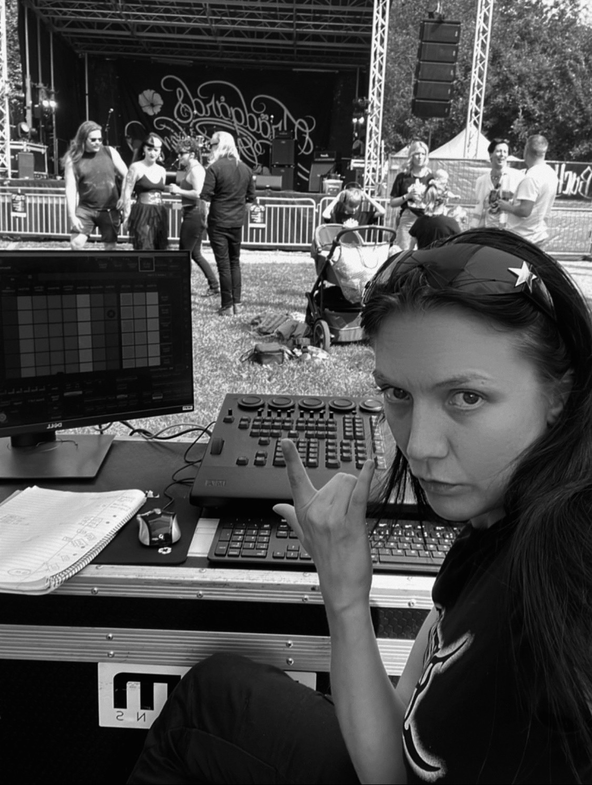

Alba Rask
Ljustekniker
Alba Rask studerar första året på kandidatprogrammet i scenkonst med inriktning ljusdesign på Stockholms konstnärliga högskola.
Hon har tidigare jobbat som ljustekniker på Dramaten, Dansens Hus, Riksteatern, Dansnät Sverige, Lumination, MDT och Norbergfestivalen. Hon har gjort ljusdesign för Dunkel, Groove, Raised on Rhythm, Phakathi Inside och Drag Light District.
Vid sidan av studier jobbar hon på Dramaten och frilansar. Hon är uppväxt i Luleå men bosatt och verksam i Stockholm. Kärleken till ljus fann hon genom dans och ravefester.